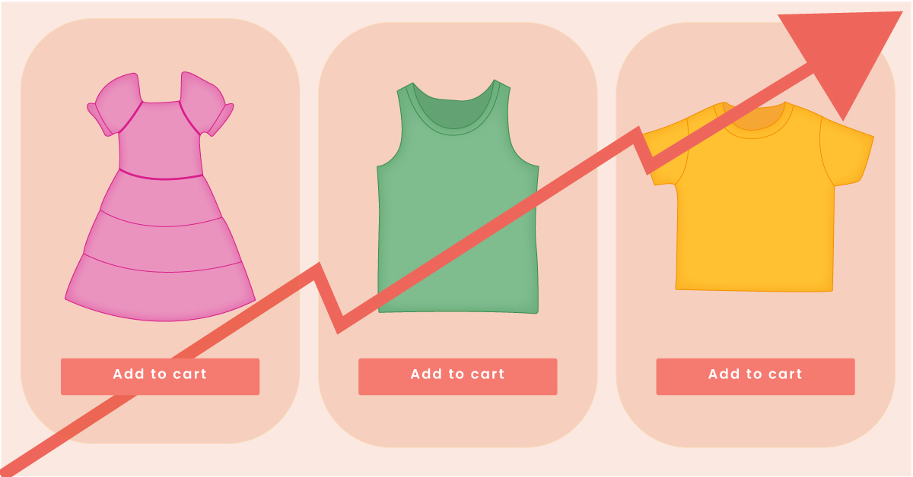
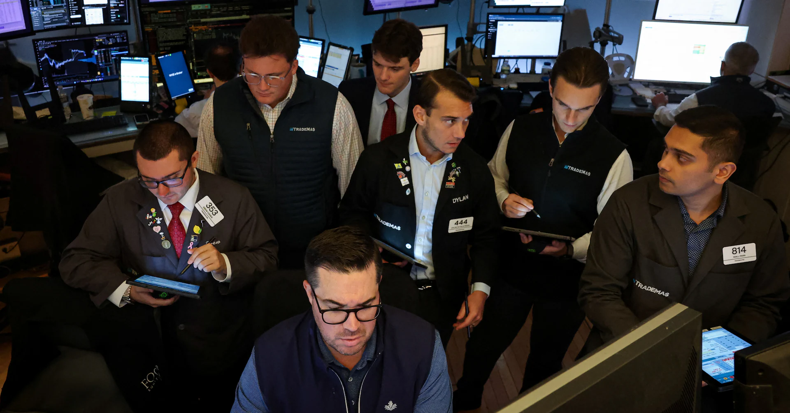
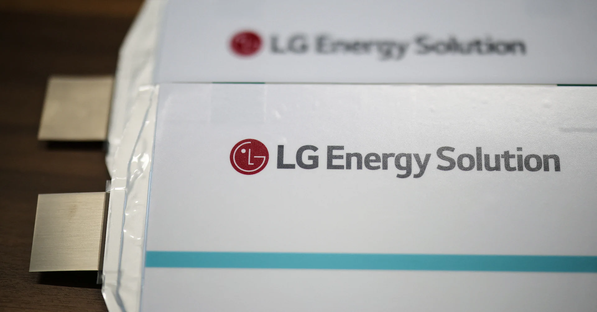
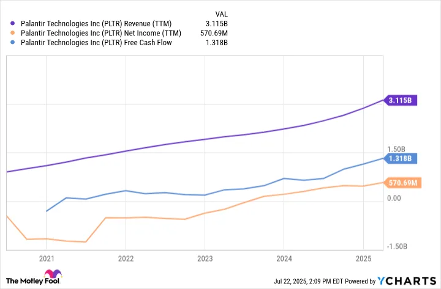
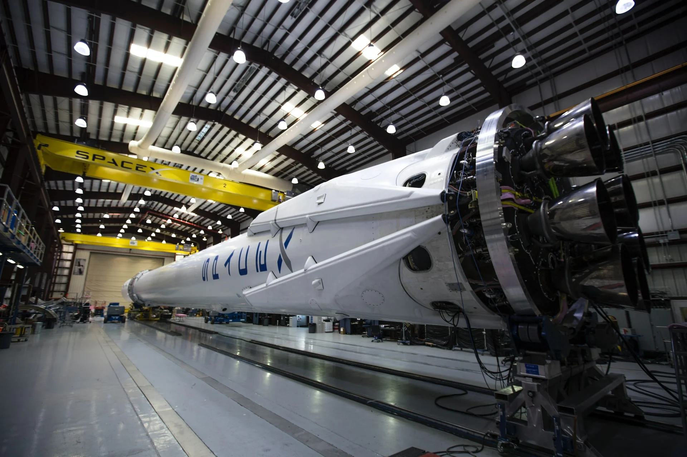
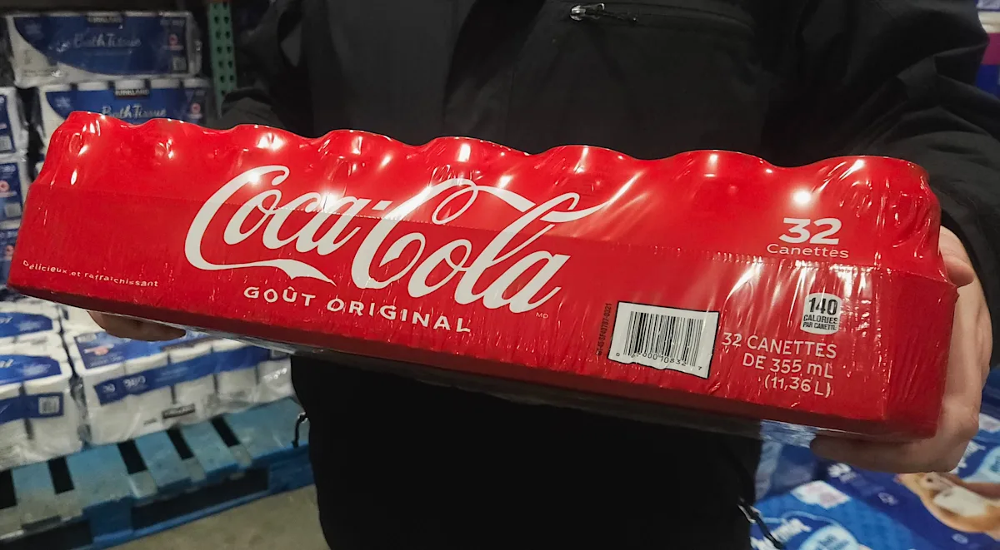
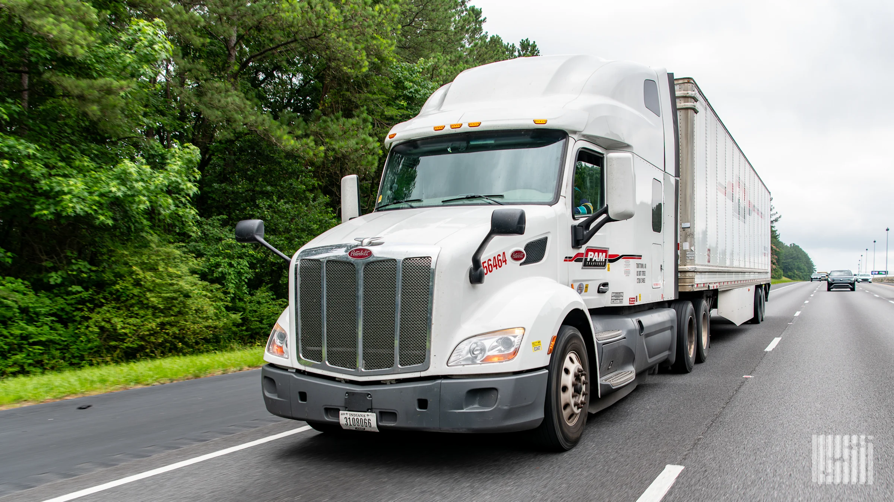
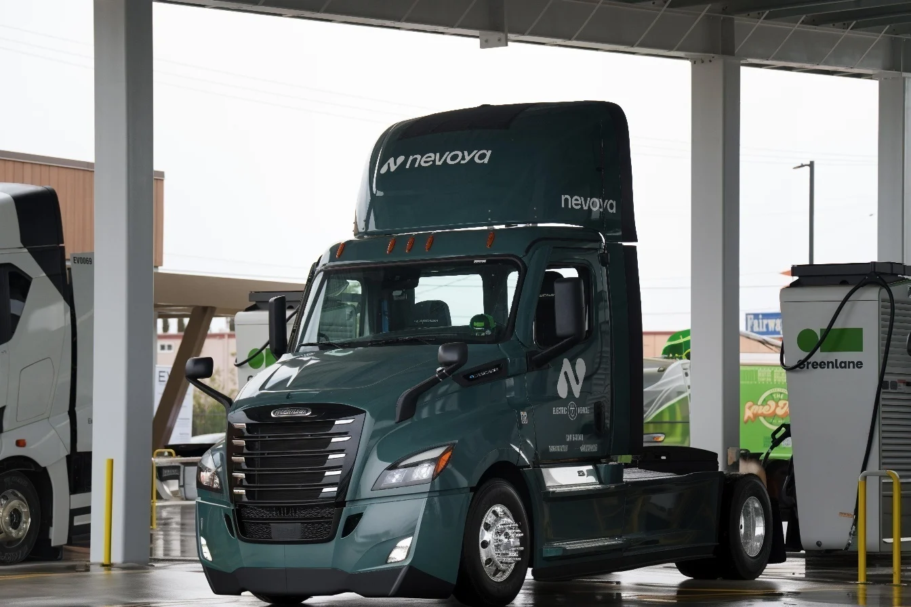

Waneye Financial Overview
Last updated: 2025-07-26 17:13 UTC
Top Financial Headlines
Dynamic












Dynamic
Dynamic
Dynamic
Dynamic
Central Banks
US Federal Reserve - Economy at a Glance
Federal Funds Rate: 4.25-4.50%
PCE Inflation: 2.1%
Unemployment Rate: 2.1%
GDP Growth: 2.1%
Policy Rates
- Federal Reserve: Rate not found
- European Central Bank: Rate not found
- Bank of England: Could not fetch rate (Request Error)
- Bank of Japan: Could not fetch rate (Request Error)
- Swiss National Bank: Could not fetch rate (Request Error)
- Bank of Canada: Rate not found
- Reserve Bank of Australia: 3.85%
- People's Bank of China: Rate not found
- Reserve Bank of New Zealand: Could not fetch rate (Request Error)
Key Economic Data
- US Nonfarm Payrolls: +250K (2025-05-20)
- Eurozone CPI: 2.1% YoY (2025-05-19)
Forex CFD Quotes
| Pair | Bid | Ask |
|---|---|---|
| EUR/USD | 1.085 | 1.0852 |
| USD/JPY | 155.2 | 155.23 |